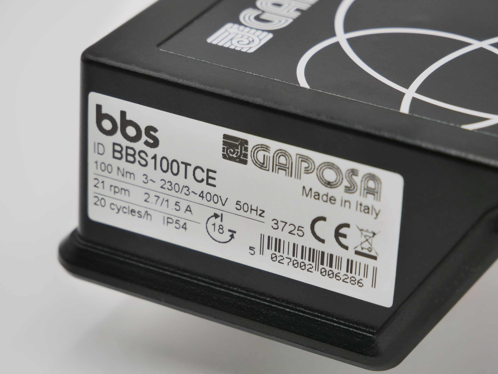
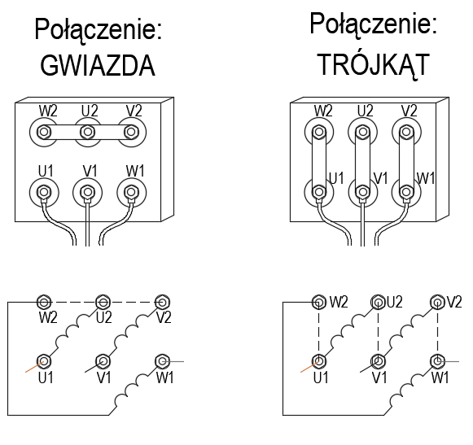
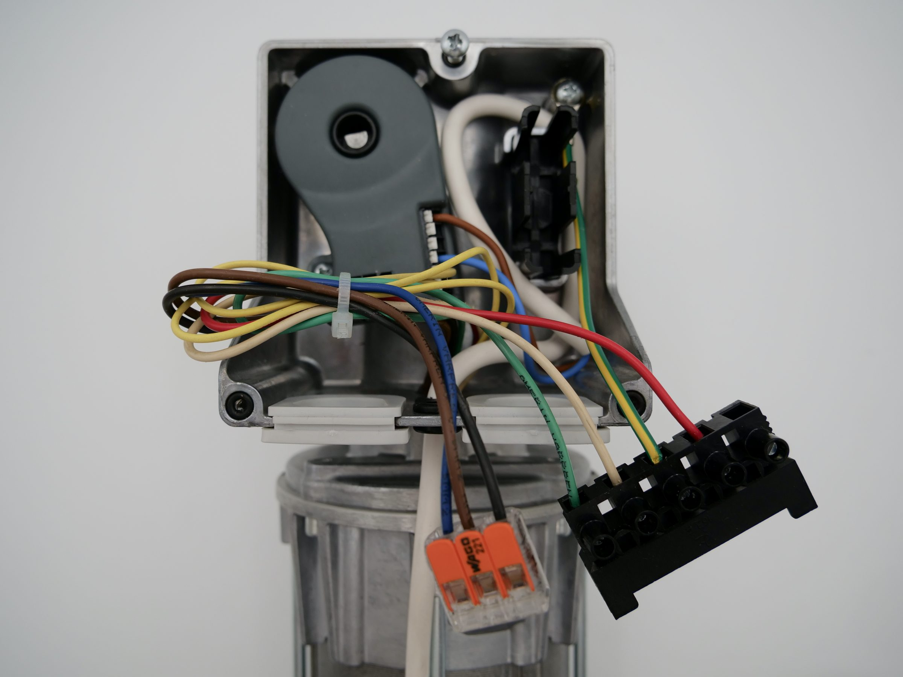
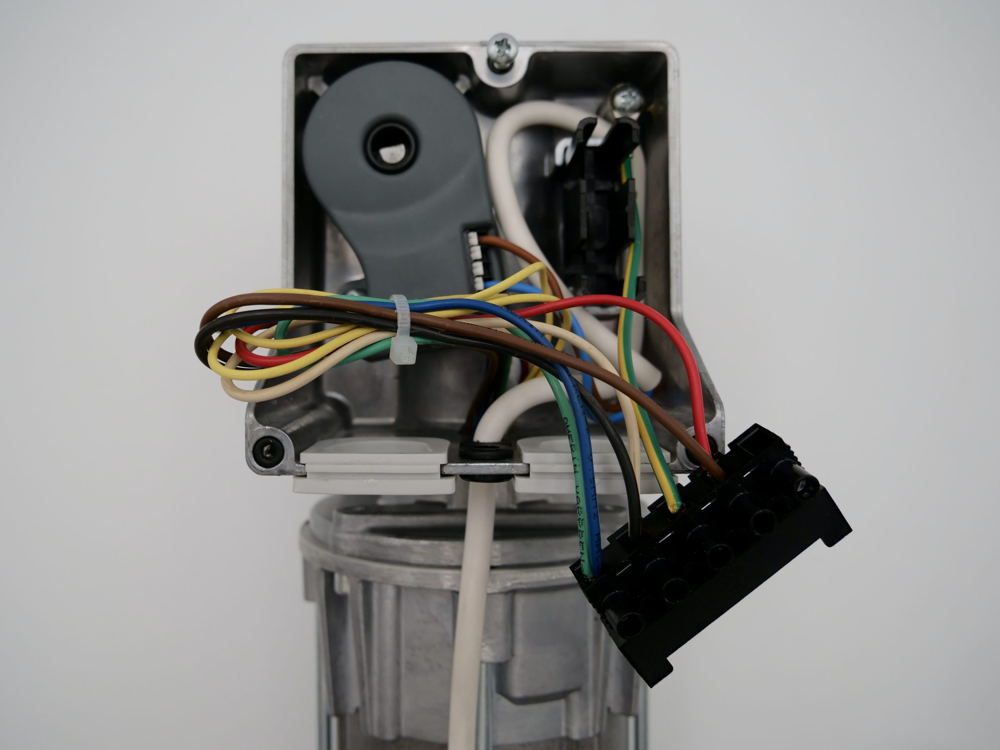

Centrala z inwerterem 230V - dlaczego warto ją stosować
Większość producentów siłowników do bram wykorzystuje silniki i centrale 3-fazowe 400V z uwagi na ich niezawodność i duży moment obrotowy.
Co zrobić kiedy nie mamy lub nie możemy zastosować zasilania 400V?
Najczęściej producenci automatyki przewidują taką możliwość, a potwierdzenia należy szukać na tabliczce znamionowej.
Jeżeli producent oznaczył parametry zasilania 230/400V, oznacza to możliwość zasilania silnika napięciem 3-fazowym 400V lub 1-fazowym 230V przy odpowiednim sposobie podłączenia i sterowania.

Dwa sposoby na zasilanie 1-fazowe 230V
Wariant z kondensatorem
Najprostszy i najtańszy wariant, ale z istotnym ograniczeniem parametrów siłownika do ok. 40% parametrów znamionowych.
Wariant z inwerterem
Najlepszy sposób na zachowanie nominalnych parametrów siłownika oraz dodatkowe zwiększenie jego możliwości.
1 - Wariant z kondensatorem
Zasilanie 1-fazowe z kondensatorem rozruchowym jest najprostszym i najtańszym wariantem, ale trzeba pamiętać o ograniczeniu parametrów silnika i jego nagrzewaniu się.
Przy takim podłączeniu siłownik nie pracuje z pełną mocą i nadaje się wyłącznie do niskiej intensywności użytkowania siłownika.

Gotowe sterowanie
Gotowym rozwiązaniem do sterowania napędów bram segmentowych jest zastosowanie centrali QC41F/L, zasilanej 1-fazowo 230V, do silników o mocy maksymalnej 0,55 kW.
Zapytaj o dobór centrali
2 - Wariant z inwerterem
Zasilanie 1-fazowe za pomocą inwertera to najlepszy sposób na zachowanie nominalnych parametrów siłownika oraz dodatkowe zwiększenie jego możliwości.
Aby umożliwić zasilanie silnika za pomocą inwertera, należy zmienić podłączenie w silniku z układu gwiazdy „Y” na trójkąt „Δ” - układ 3x230V.



Regulacja częstotliwości zasilania to większe możliwości siłownika
Każdy siłownik na tabliczce znamionowej ma określone nominalne parametry momentu obrotowego, prędkości obrotowej oraz częstotliwości zasilania, najczęściej 50 Hz.
Zasilanie siłownika z użyciem inwertera pozwala na płynną regulację częstotliwości zasilania, co wpływa bezpośrednio na zmianę prędkości obrotowej oraz uzyskanie funkcji Soft START/STOP, która zwiększa żywotność napędu i samej bramy przez ograniczenie przeciążeń mechanicznych podczas startu i zatrzymania bramy.
Bezpieczny zakres regulacji częstotliwości zasilania to 25-75 Hz, co przekłada się na zmiany prędkości dla przykładowego siłownika ze stałych 21 obr/min na zakres od 10 do 32 obr/min.
QC600 z inwerterem
Gotowym rozwiązaniem do sterowania napędów bram segmentowych, rolowanych i szybkobieżnych jest zastosowanie centrali QC600 do zasilania silników o mocy maksymalnej 2,2 kW.
Zobacz centrale sterujące